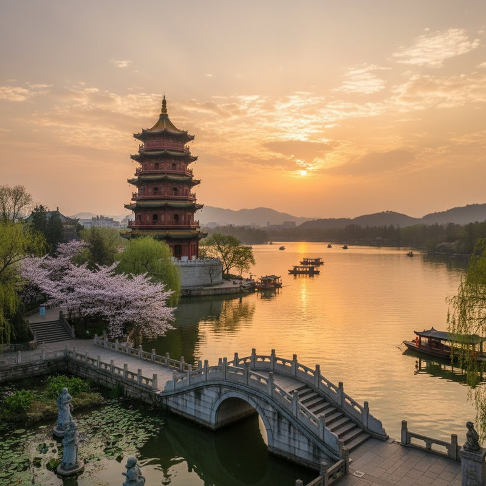
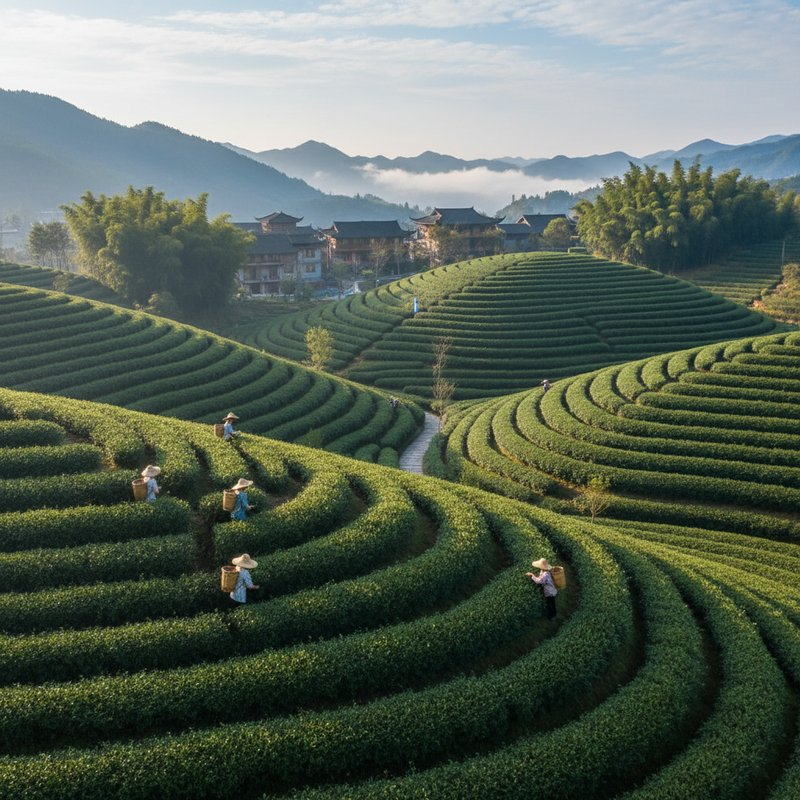
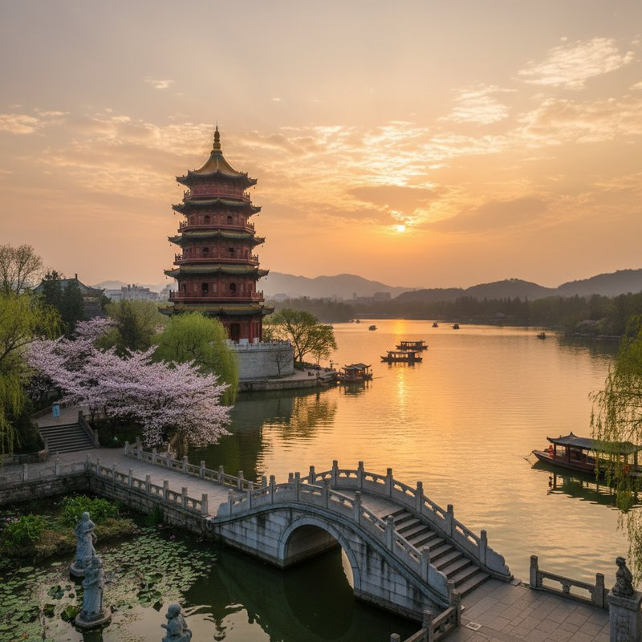
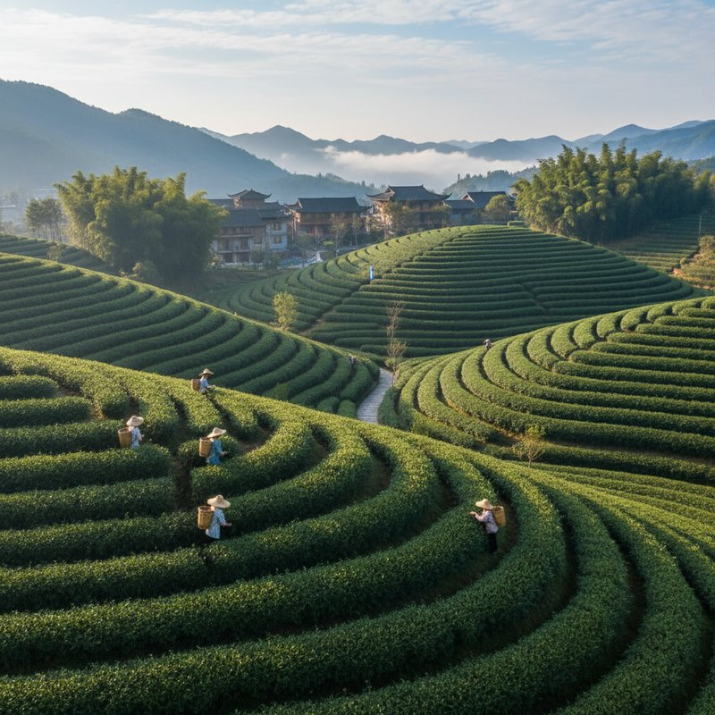

Detailed Overview
Hangzhou, the capital of Zhejiang province, represents the poetic soul of China, immortalized in countless poems, paintings, and literary works throughout Chinese history. Situated at the southern terminus of the Grand Canal and on the banks of the Qiantang River, Hangzhou's most famous feature is West Lake (Xi Hu), a UNESCO World Heritage Site that has inspired artists and poets for over a millennium. The city served as the capital of the Southern Song Dynasty (1127-1279), during which it became the world's largest city with a population exceeding one million and a center of Chinese culture, commerce, and innovation. West Lake's beauty lies in its "Ten Scenes," carefully composed views that change with the seasons: "Spring Dawn at Su Causeway," "Lotus in the Breeze at Crooked Courtyard," "Autumn Moon over the Calm Lake," and "Remnant Snow on Broken Bridge" among them. These scenes represent the Chinese aesthetic ideal of harmony between human creation and natural beauty. The lake itself covers 6.5 square kilometers but feels much larger due to its intricate layout of causeways, islands, and temples that create constantly shifting perspectives. Su Causeway, built by the poet-governor Su Dongpo in the 11th century, and Bai Causeway, named after another poet-official Bai Juyi, serve as both practical transportation routes and artistic compositions. Beyond West Lake, Hangzhou boasts significant cultural and historical sites. Lingyin Temple (Temple of the Soul's Retreat), founded in 328 AD, ranks among China's most important Buddhist temples. Its Feilai Feng (Peak Flown From Afar) grottoes contain over 470 stone carvings of Buddhist figures dating from the 10th to 14th centuries. The Six Harmonies Pagoda, originally built in 970 AD to suppress tidal bores on the Qiantang River, offers panoramic views of the river and city. The National Silk Museum, the world's largest dedicated to silk, showcases Hangzhou's 5,000-year history of silk production and the city's crucial role on the Maritime Silk Road. Hangzhou's economic significance has evolved from historical silk production to modern technology leadership. As headquarters of Alibaba Group, Hangzhou has transformed into China's e-commerce capital, with the Cloud Town district housing countless tech startups. This blend of ancient tradition and cutting-edge innovation creates a unique urban character. The city's culinary reputation rests on its status as the birthplace of Zhejiang cuisine, known for fresh ingredients, subtle flavors, and artistic presentation. Signature dishes include Dongpo Pork (braised pork belly named after the Song Dynasty poet), West Lake Fish in Vinegar Gravy, Beggar's Chicken, and Longjing Tea Shrimp. The surrounding countryside offers equally compelling attractions. Longjing (Dragon Well) tea plantations in the West Lake hills produce China's most famous green tea, with the best leaves harvested before the Qingming Festival in early April. Xixi National Wetland Park, China's first national wetland park, preserves traditional water village culture with waterways, ponds, and reed marshes. The Qiantang River tidal bore, the world's largest, creates a spectacular wall of water up to nine meters high during the autumn equinox, attracting thousands of spectators to specially built viewing platforms.
Overview
Hangzhou is the capital of Zhejiang Province, famous for its picturesque West Lake, ancient temples, and rich cultural heritage. Known as 'Paradise on Earth' for its natural beauty, tea plantations, and historic sites dating back to the Southern Song Dynasty.
Must-See Highlights
Top Attractions
West Lake, Lingyin Temple, Six Harmonies Pagoda, West Lake, West Lake, West Lake
Local Cuisine
Dongpo Pork, West Lake Fish in Vinegar Gravy, Longjing Tea, Mongolian Hot Pot, Hangzhou Yogurt
Best Time to Visit
Autumn (September-October) with clear skies and pleasant temperatures
Travel Tips
Comprehensive Travel Guide
Experiencing Hangzhou's beauty requires understanding its seasonal rhythms and strategic timing. West Lake attracts massive crowds during national holidays (especially Golden Week in October and Spring Festival), making weekdays and shoulder seasons (March-April, September-October) ideal for visitation. Arrive at popular sites like Leifeng Pagoda or Lingyin Temple right at opening time (typically 8:00 AM) to enjoy relative tranquility before tour groups arrive around 10:00 AM. Transportation within Hangzhou has improved dramatically with the expansion of its metro system, but certain experiences demand specific approaches. Renting a bicycle offers the best way to explore West Lake's perimeter, with numerous rental stations and dedicated bike lanes along the lake. For the full West Lake experience, take a traditional wooden boat from one of several piers—the longer routes that include visits to islands provide better value than short crossings. Consider hiring a boat for a private tour during sunset for unforgettable views. Tea culture forms an essential part of the Hangzhou experience. When visiting Longjing tea plantations, go with a local guide who can explain the tea-making process and help you distinguish authentic Longjing tea from imitations. The best tea purchases come directly from tea farmers in Meijiawu or Longjing villages rather than tourist shops. Participate in a traditional tea ceremony to appreciate the proper brewing technique and flavor nuances of different harvest times. Accommodation choices significantly impact your Hangzhou experience. Lakeside hotels offer stunning views but come with premium prices and potential noise from evening light shows. Consider staying in the Hefang Street area for better access to local life, traditional architecture, and authentic dining options. Many historic courtyard homes have been converted into boutique hotels offering traditional Chinese aesthetics with modern comforts. Dining in Hangzhou requires some local knowledge. While famous restaurants like Louwailou and Zhiweiguan serve excellent versions of classic dishes, venture into smaller family-run establishments in the Qinghefang Historic District for more authentic experiences. Street food along Hefang Street offers delicious snacks like stinky tofu, fried dumplings, and sweet osmanthus cakes. For the ultimate culinary experience, book a meal at one of Hangzhou's "black pearl" restaurants that reinterpret traditional Zhejiang cuisine with modern techniques. Day trips from Hangzhou expand your understanding of the region. Shaoxing, an hour away by high-speed train, offers completely preserved water towns and is the birthplace of Chinese yellow rice wine. Thousand Island Lake (Qiandao Hu), created by damming the Xin'an River, provides stunning scenery and water activities. The ancient town of Wuzhen, though increasingly touristy, showcases traditional Jiangnan water town architecture and lifestyle. Plan these excursions on weekdays to avoid domestic tourist crowds.
Quick Facts
Basic Info
Population: 12.2 million
Province: Hangzhou Municipality
Language: Mandarin, Hangzhou Mandarin
Timezone: China Standard Time (UTC+8)
Getting There
Airport: Hangzhou Capital International Airport (PEK) / Hangzhou Daxing International Airport (PKX)
Train: High-speed rail from Shanghai, Guangzhou, Xi'an (4-6 hours)
Best Transport: Extensive metro system, buses, and taxis
Gallery
 



Patent Data
| Patent Number | Title | Current Assignee |
|---|---|---|
| CN106897282B | User group classification method and device | Alibaba Group Holding Ltd |
| CN108418780A | Filter method and device, system, the dns server of IP address | Alibaba Group Holding Ltd |
| CN108804885B | Man-machine verification method and device, storage medium and processor | Alibaba Group Holding Ltd |